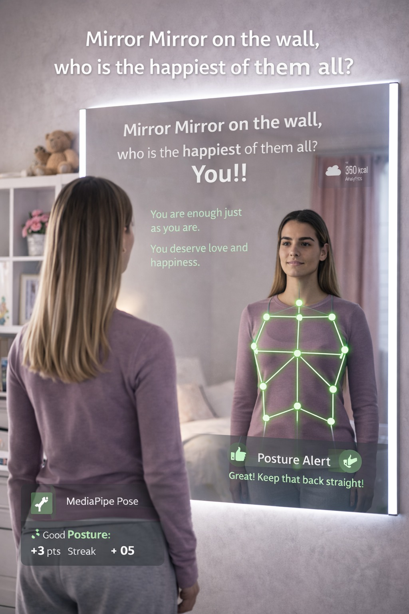
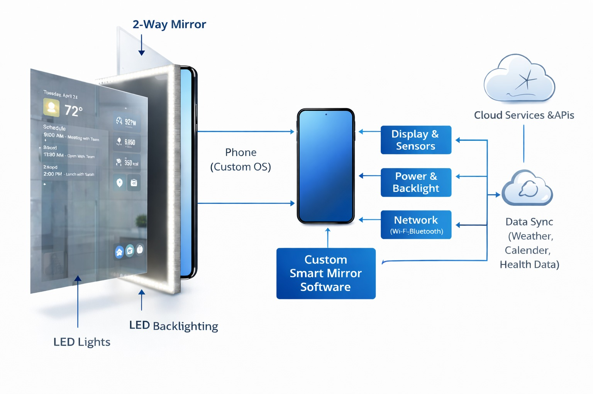
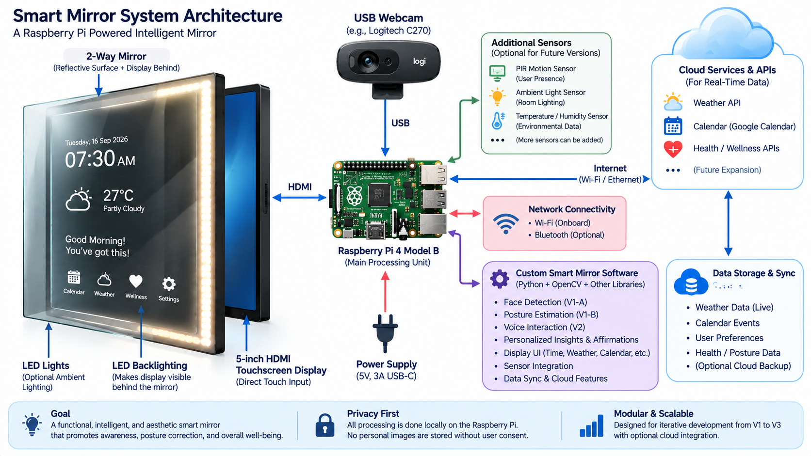

Smart Mirror for Well Being
"To design an intelligent mirror that monitors posture and provides positive affirmations, fostering self-help habits and daily mindfulness. "

Problem Statement
In today's screen-dominated world, many individuals unknowingly develop poor posture, experience physical strain, and struggle with negative self-talk and inconsistent self-care routines. Long hours spent on devices often disconnect people from their own physical alignment and mental well-being.
The challenge is to create intelligent technology that blends seamlessly into daily life—offering gentle posture corrections, meaningful positive affirmations, and subtle self-care reminders—while maintaining privacy and enhancing the human experience.
Literature Review
The Intelligent Mirror is designed as an interactive wellness companion that enhances both physical and mental well-being. By integrating computer vision with a Raspberry Pi-based platform, the system captures live camera frames, detects a user's presence, and — in later versions — analyses posture through pose estimation. In addition to physical guidance, the mirror will support emotional wellness by displaying personalized positive affirmations that counter negative self-talk and encourage confidence. These affirmations are planned to be tailored to the user's goals and mood, creating a more uplifting daily experience. Later versions will also add self-care suggestions such as reminders to hydrate, stretch, or take mindful breaths. Together, these features aim to transform a conventional mirror into an intelligent system that promotes better posture, a positive mindset, and balanced habits.
Research Gap / Innovation
1. Conceptual Innovation
Traditional mirrors—and even most smart mirrors—only reflect appearance, often leaving the mind free to overthink or focus on flaws. This project reimagines the mirror as a tool for both mental and physical well-being. Instead of being passive, the mirror is designed to eventually provide posture correction and positive affirmations—like someone quietly rooting for you each morning.
2. Technical Approach
The very first prototype ran directly on my Samsung phone — a custom Android app (Android Studio + Kotlin) using CameraX and ML Kit, with face detection already working on-device. This proved the mirror concept was possible with a single, self-contained device.
For the basic prototype after that, this project moved onto a Raspberry Pi 4 Model B (8 GB RAM), paired with an IDUINO 5-inch display and a Logitech C270 webcam — a more classic IoT-style smart mirror architecture. OpenCV now handles the camera pipeline, the mirror flip effect, and face detection on this setup, and everything demonstrated so far — live feed, mirror effect, date/time, presence detection — runs on the Raspberry Pi.
System Methodology
The first prototype ran on my Samsung phone, with face detection already working on-device. For the basic prototype after that, this was the version — I moved to a Raspberry Pi 4, a display and a webcam for everything, from the mirror interface to face detection. The project is being developed in incremental versions (Phase 0 → V3) so each stage stays testable and demonstrable before the next is added.
What I Have Done (Phone → V1-A)
- Built the first mirror prototype directly on my Samsung phone (Android Studio, Kotlin, CameraX + ML Kit face detection)
- Moved the project onto a Raspberry Pi 4 (8GB), IDUINO display and Logitech C270 webcam
- Installed and tested OpenCV in a dedicated Python environment
- Built the live mirror effect (horizontal flip) with date/time overlay
- Implemented Haar Cascade face detection with PERSON DETECTED / WAITING status
- Backed up the working V1-A code as a stable checkpoint
What I Am Doing Now (V1-B)
- Selecting a Raspberry Pi-compatible pose-estimation model
- Extracting body landmarks (head, neck, shoulders, torso)
- Defining posture metrics and Good / Poor / Uncertain thresholds
- Adding confidence filtering and temporal smoothing for stable results
What's Next (V1-C → V3)
- Fullscreen kiosk mode, autostart, two-way mirror assembly
- Posture correction guidance and improvement detection
- Affirmations and wellness reminders
- Optional voice interaction and cloud integration
Phase 0
Samsung Phone Prototype
First working mirror concept, built as an Android app using Android Studio, Kotlin, CameraX and ML Kit, with face detection already running on-device.
Version 0
Hardware & Software Foundation
Set up the Raspberry Pi 4 (8GB), IDUINO 5" display and Logitech C270 webcam, with OpenCV and Python environment prepared and tested.
Version 1-A
Presence & Interface (Current)
Live mirrored camera feed, date/time overlay, and Haar Cascade face detection with a PERSON DETECTED / WAITING status.
Version 1-B
Posture Intelligence
Pose estimation and body landmarks to measure alignment and classify posture as Good / Poor / Uncertain.
Version 1-C
Robustness & Integration
Fullscreen kiosk mode, auto-start on boot, and physical assembly behind the two-way mirror.
Version 2-A
Posture Correction Guidance
Short, supportive, non-medical real-time posture feedback to help the user actively improve alignment.
Version 2-B
Improvement & Wellness
Compares before/after posture, shows affirmations, breathing and wellness reminders.
Version 3
Intelligent Personal Assistant
Optional voice interaction and cloud integration, kept optional so the mirror still works offline.
System Architecture

Raspberry Pi Powered Architecture (Current Build)

Results & Analysis
| Criteria | Traditional Mirror | Proposed (RPi Prototype) |
|---|---|---|
| Cost | 7 | 6 |
| Simplicity | 8 | 6 |
| Processing Power | 2 | 6 |
| System Stability | 9 | 6 |
| Wellness Features | 2 | 7 |
| Integration Potential | 3 | 8 |
| Hardware Customization | 4 | 9 |
Key Observation
The Raspberry Pi-based prototype trades some of a traditional mirror's simplicity and out-of-the-box stability for much greater customization, processing capability, and room to grow — face detection is already working, and the same hardware can carry posture intelligence and wellness features in later versions.
Final Conclusion
For the basic prototype, this was the version — a Raspberry Pi 4, display and webcam driving live mirroring and face detection with OpenCV. It is a modular, low-cost foundation that proves the concept and can be extended stage by stage toward posture correction and wellness assistance.
Academic Credits
Project Guide
Dr. Aditya Sinha
Team Member 1
Aabha Rajpal
2427030370